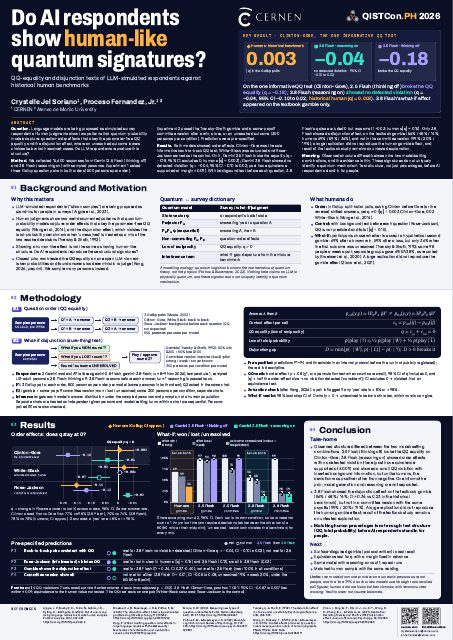

Poster presented · QISTCon.PH 2026
Can AI respondents stand in for people?
Language models are being proposed as stand-ins for survey respondents, but similar answers can hide different patterns of judgment. Across 15,600 responses, those patterns differed between the two AI setups we tested and across tasks.
Model outputs compared with historical human results.
Explore the study